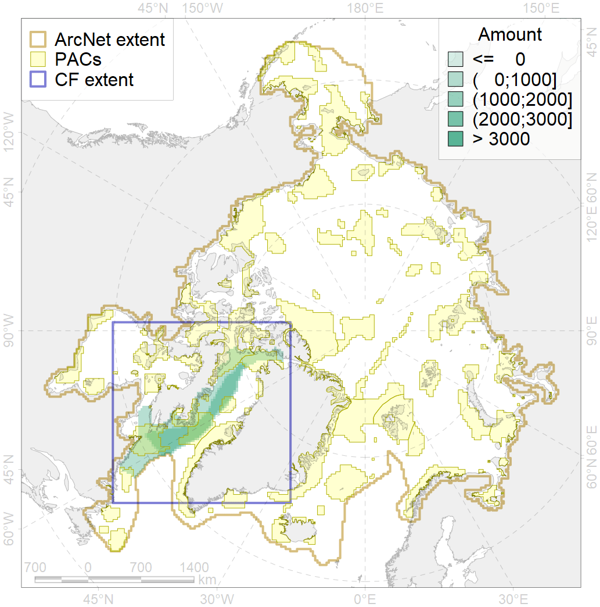
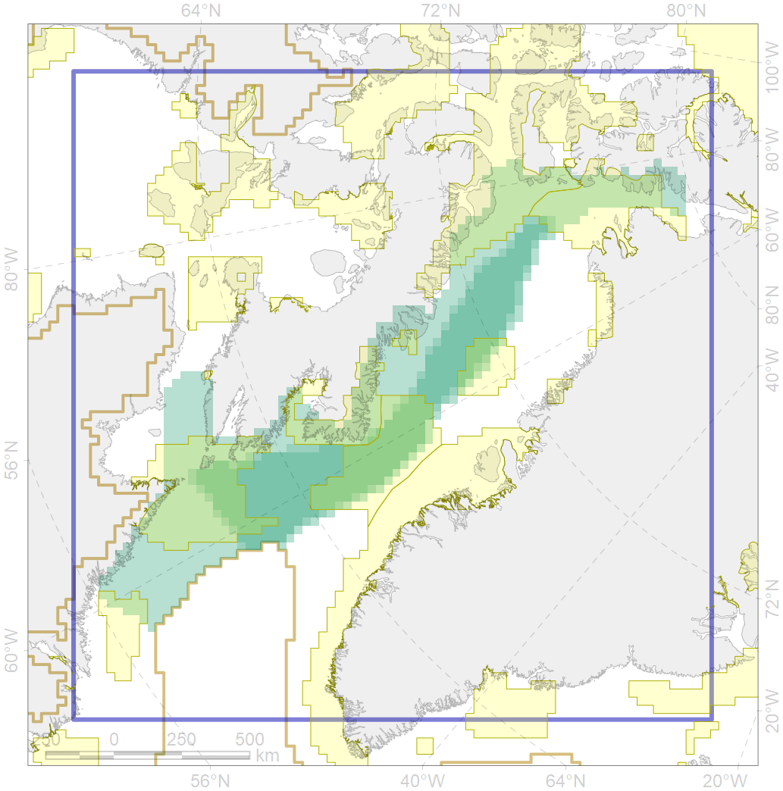

2027

| CF code | 2027 |
| CF name | Hooded seal foraging areas |
| Time Period | 2010 |
| Source(s) | Stephenson, Hartwig, 2010, expert opinion |
| Seasonality | June-August |
| Depth Horizon | 0-1000 m |
| Methodology | Habitat preference research and expert input |
| Use Restrictions | Open source |
| Author Name | Irina Trukhanova |
| Notes | |
| Scenario’s Target | 0.384 |
| Target Achievement | 0.441 (Scenario: 114.8%) |
| PAC | Share of the Total Amount within the PAC | Share of the Target Achievement for the ArcNet | PAC’s Contribution to the Target Achievement |
|---|---|---|---|
| 45 | 16.6%17.1% | 40.7%41.8% | 35.5%36.4% |
| 46 | 2.2%3.4% | 5.2%8.1% | 4.5%7.0% |
| 47 | 2.6% | 6.5% | 5.6% |
| 50 | 0.2% | 0.6% | 0.5% |
| 51 | 3.1%3.6% | 8.0%9.3% | 7.0%8.1% |
| 52 | 3.9%4.3% | 10.1%11.1% | 8.8%9.6% |
| 76 | 14.2%14.3% | 35.5%35.6% | 31.0%31.0% |
| 77 | 0.5% | 1.1% | 1.0% |
| inner | 43.5%46.0% | 107.8%114.0% | 93.9%99.4% |
| outer | 56.5%57.0% | 7.0%8.1% | 6.1%7.1% |
| † supplement values are for area consistence whereas principal values are for Accenter compatible gridded stats |